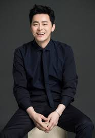

Jo Jung-suk (born December 26, 1980) is a South Korean actor. He began his career in theater, starring in Spring Awakening, Hedwig and the Angry Inch, and the stage adaptation of The Harmonium in My Memory, among many other musicals and plays.

After nearly a decade on the stage, Jo made his film debut as a comedic supporting actor in the 2012 box office hit Architecture 101, which became his breakout role. His versatility was further showcased by the television series The King 2 Hearts (2012), You're the Best, Lee Soon-shin (2013), Oh My Ghost (2015), and Don't Dare to Dream (2016), as well as films The Face Reader (2013), My Love, My Bride (2014) and My Annoying Brother (2016).